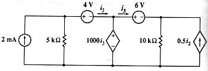

Problem #2
Given the following circuit, find the power that each source generates. (Hayt-Kemmerly)

I used the following circuit description:
"ji,0,1,0.002; r1,0,1,5000; ed,2,0,1000*ie6; e6,2,3,6; e4,1,2,4; r2,0,3,10000; jd,0,3,0.5*ie4" ->cir
Simulate the circuit:
sq\dc(cir
)
Done
Retrieve the answer. Since the book asks for the generated power and Symbulator returns the consumed power, you have to change the sign of the power when you ask for it:
-pji
.005
-ped
.0045
-pe6
.009
-pe4
-.006
-pjd
-.00563